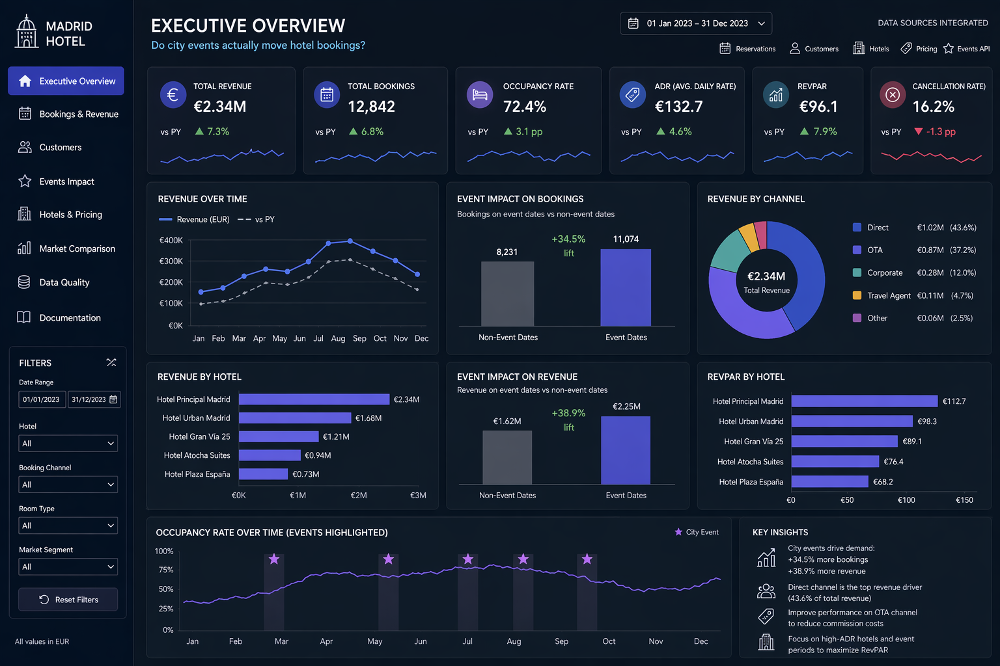

End-to-end ETL on hotel reservation data — customers, hotels, bookings and pricing — enriched with open-data event APIs from the Madrid Community to test whether city events have a measurable impact on demand and revenue. Loaded into PostgreSQL for SQL-driven analysis and EDA.
Hotel reservation data was scattered across raw exports, partially transformed files and ad-hoc spreadsheets. There was no clean way to ask basic business questions: who are our top spenders, how does revenue compare against competitors, and — most importantly — do city events actually drive bookings, or is it just a feeling?

A clean, queryable warehouse turns one-off questions into reusable answers. Once the events layer is in place, marketing and revenue management can stop guessing and start pricing around real demand signals.